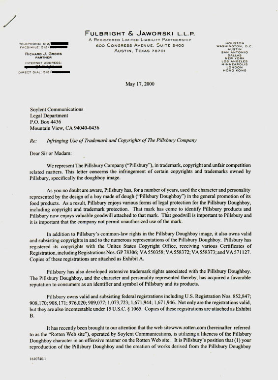
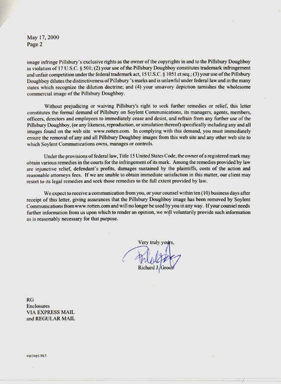
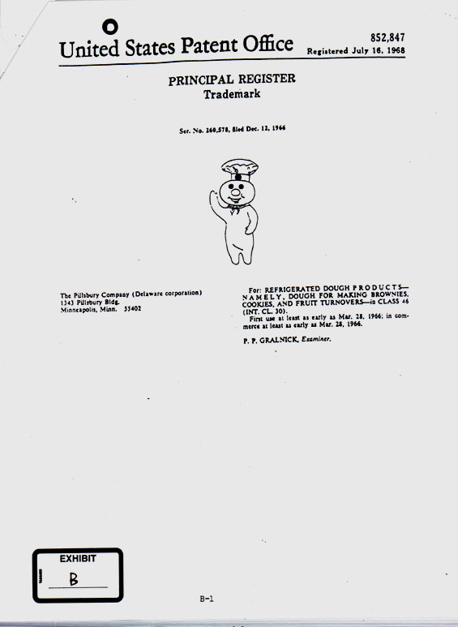

cease & desist letter #9 - Pillsbury
An archive of disturbing illustration
Part I. Cause
Pillsbury took objection to our having a depiction of the
"doughboy holocaust" -- a doughboy alive but cooking in an oven,
with a wistful expression looking at his fallen comrades
outside, already cooked.



Part II. Conclusion
Image was removed, though they don't really have a case.
Allegations of "unfair competition" are ridiculous -- in what
business are we supposedly competing with them? Furthermore,
use of even a trademark is allowed in some circumstances,
such as parody or satire.
Anyway we don't even know who did this picture, it came
to us through sources long forgotten. But we bet the Jewish
ADL tipped off Pillsbury.
[return to rotten.com]
|